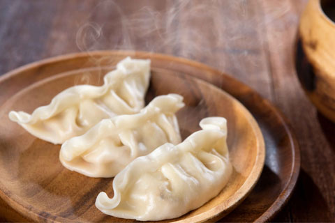

Tofu Ramyun Noodles

Description
Tofu ramyun is a comforting dish that is savory and spicy. It is a delicious upgrade to a normal ramyun noodles.
Ingredients
- 1/2 package sundubu (stinky tofu)
- 1/2 package spicy ramyun
- 1 tablespoon chopped scallion
- 1/2 teaspoon minced garlic
- 1/2 tablespoon sesame oil
- 1/4 teaspoon chilli paste
- Half a tablespoon of cumin powder
- 1 egg
- pinch of pepper
Steps
- Add the sesame oil, garlic and 1/2 of the ramyun seasoning mix and chilli paste to a small pot
- Mix well over medium heat for a few seconds
- Turn the heat up to medium high and add 1 cup of water
- When water boils, add the tofu in big chunks, and bring it to a boil
- Drop the noodles in, and then add 1/2 packet of the vegetable flakes
- Continue to boil until the noodles are almost cooked, about 3 minutes
- Crack an egg straight over the noodles. You can break the egg yolk and stir into the soup if you want
- Turn the heat off, and drop the scallion in, and sprinkle with pepper to taste
Return to Main